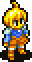
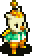
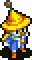
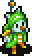
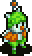
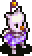

Main Characters
|

Marche Radiuju
The protagonist of Final Fantasy Tactics Advance. A young child who has just moved into a new town, Marche finds it hard to fit in until he makes two new friends: the shy Mewt Randell and the more outspoken Ritz Malheur. After the trio discovers an ancient book with Marche's brother Doned, they are transported to the magical world of Ivalice. Marche vows to return him and his friends back to their true reality. |

Monthblanc
A recurring character in the Ivalice series of games. He is a hard-working moogle, and in all his appearances leads a clan. He debuts in Final Fantasy Tactics Advance where he is a playable character and the game's deuteragonist. He finds Marche Radiuju after St. Ivalice transforms into the land of Ivalice, and later decides to help him revert the land to normal. |
Ritz Malheur
The female protagonist of Final Fantasy Tactics Advance. The headstrong class head, she appears bossy, but has a vulnerable side. Shara the viera is her partner, and comforts her many times during the game. |
Mewt Randell |
|
Babus Swain |
Ezel Berbier |
Shara | Doned Radiuju |
Race
| Human | |||
|---|---|---|---|

Soldier |

Thief |

Archer |

White Mage |

Black Mage |
| Nu Mou | |||
|---|---|---|---|
|

Black Mage |

Thief |

Animist |

Mog Knight |